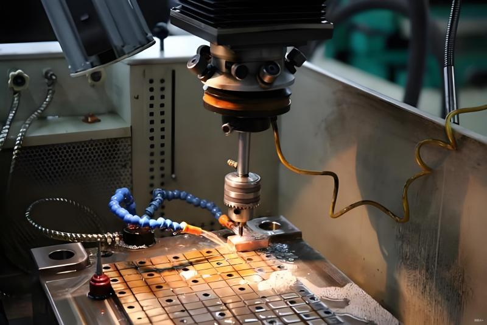

金型、医療、自動車、電子機器、産業機器のお客様に精密加工を提供
医療自動車電子機器産業機器金型
CNC フライス加工材料
機能、外観、量産要件に合わせて、適切な金属・エンジニアリングプラスチックを選定できます。



アルミニウム
アルミは軽量で強度があり加工性に優れ、試作、筐体、治具部品、構造部品に広く使われます。
- 色
- シルバー
- 材質例
- 6061、6061-T6、5052、5083、6063、7075、ADC12
- 表面処理
- 切削まま、アルマイト、ブラスト、研磨、コーティング
- リードタイム
- 試作品は複雑度により約 5 営業日から
CNC フライス加工の公差
図面要求、GD&T、材料安定性、最終検査要件に基づいて CNC 加工工程を設計します。
| 一般公差 | 金属：ISO 2768-m 樹脂：ISO 2768-c |
|---|---|
| 精密公差 | 重要寸法は形状、材料、検査方法に応じて ±0.005mm まで対応可能です。 |
| 最小肉厚 | 多くの金属切削部品では 0.5mm を推奨 |
| 最小エンドミル径 | 0.5mm |
| 最小ドリル径 | 1mm |
| 最大部品サイズ | CNC フライス参考範囲：4000 x 1500 x 600mm |
| 最小部品サイズ | 治具固定と形状により約 5 x 5mm |
品質保証を備えた精密 CNC フライス加工
信頼できる部品には信頼できる検査が必要です。RIXIN は加工管理と文書化された品質確認を組み合わせます。

認証・体制
品質・環境管理の実践により、安定した製造と輸出向け資料を支えます。
専門性
技術者が寸法、表面、材料状態、組付け重要部位を出荷前に確認します。
透明な工程
材料受入から最終検査まで、文書化された確認により安心してご依頼いただけます。
詳しく見る